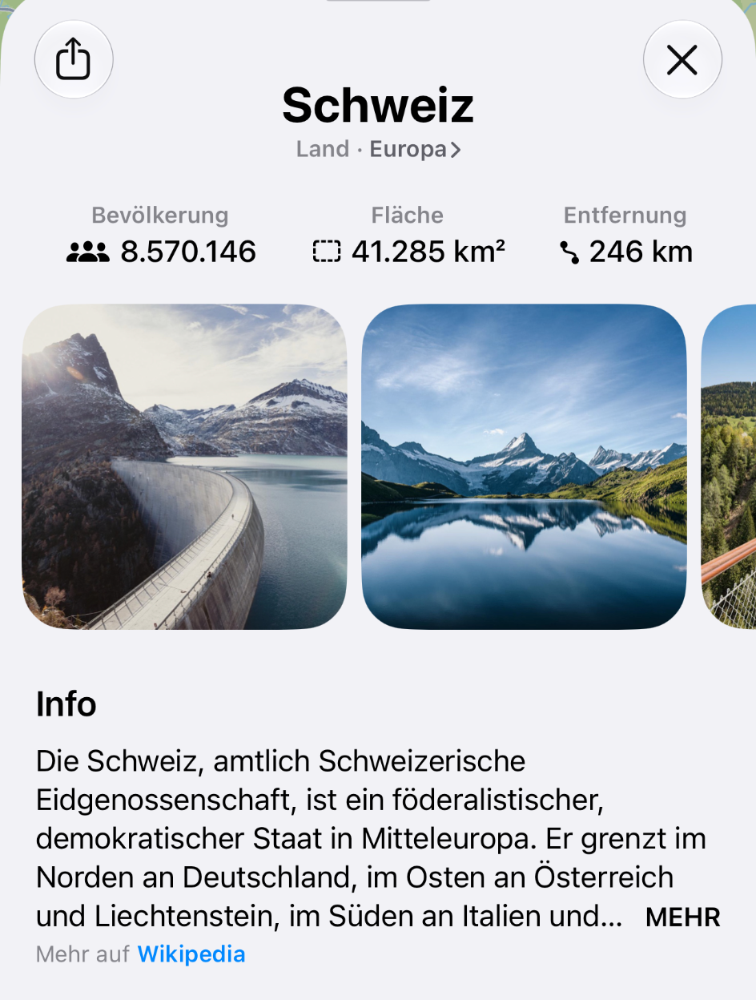
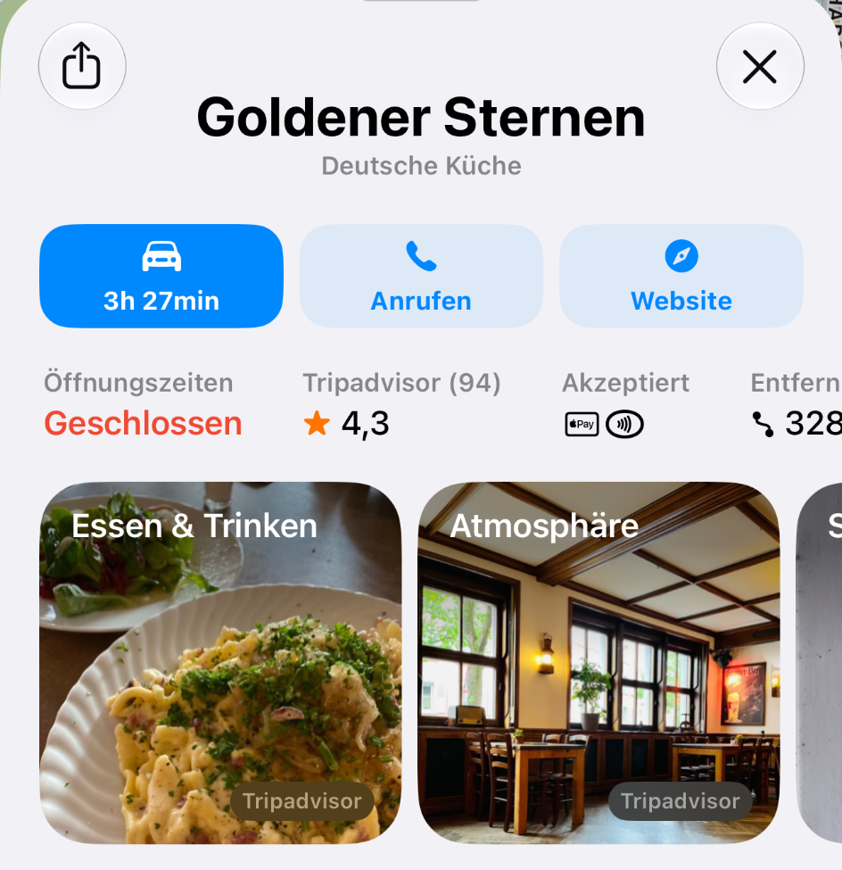

Classification, image selection
and content filtering.
Integrated text, metadata and suitable images into Maps and iOS with the teams. Organised imagery by topic and filtered unsuitable content.
View the Switzerland exampleGeospatial data, Wikipedia, POI providers and Indoor Maps: my contributions to mapping features and mobile experiences at Apple.


Wikipedia supplies knowledge and relationships. Specialist providers add restaurants, hotels and businesses. The underlying tasks differ; the interface brings them together.
Integrated text, metadata and suitable images into Maps and iOS with the teams. Organised imagery by topic and filtered unsuitable content.
View the Switzerland exampleCompared providers with the teams and selected sources based on their coverage. The restaurant example shows visibly attributed Tripadvisor content.
View the restaurant exampleOriginated AR-Maps and led roughly 18 months of cross-team development, translating geographical coordinates into a spatial representation. The prototype was not released in this form; according to my account, it provided a foundation for later AR navigation in iOS.

Initiated Business Chat, built the first iOS prototype and developed it into a released feature with the iMessage and Maps teams. Responsible for the first contracts with selected European businesses.
Messages for Business · AppleIdea. Prototype.
Cross-team delivery.
First business partners.
Business Chat is now called Messages for Business. The linked Apple page describes the product.
My account of the work is separate from the public product references. The illustrations show released interfaces and features, not proof of sole authorship. Screenshots and their source links are clearly identified.